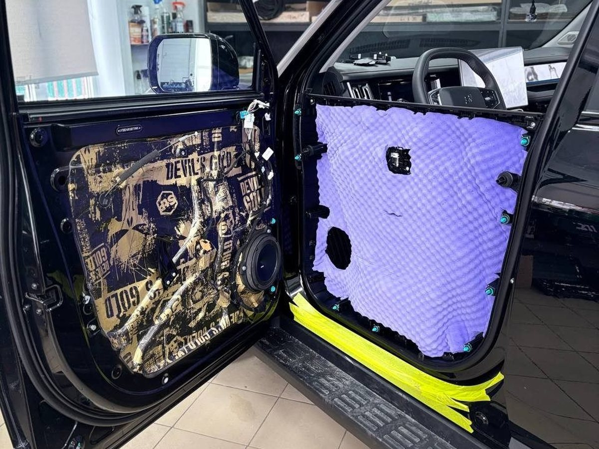
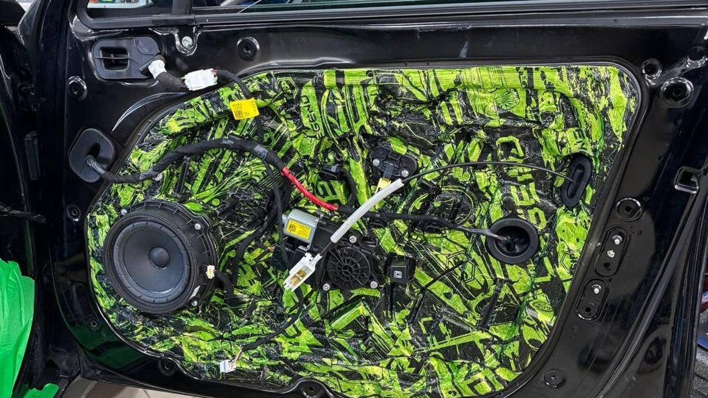
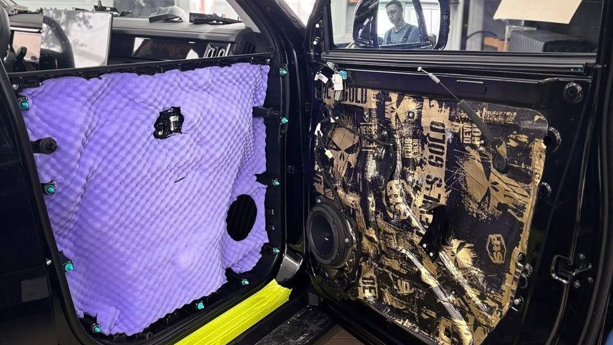

Звук двери выдаёт машину раньше, чем мотор. Утро, минус пять, двор где-нибудь в Брагине. Вы закрываете водительскую дверь, и она отвечает пустым жестяным «бам», с лёгким дребезгом внутри. Садитесь, включаете музыку – и голос певца звучит как из коробки из-под обуви: середина есть, а низа нет, хотя регулятор баса выкручен до упора.
Обидно ещё и потому, что соседская машина того же класса закрывается глухо и солидно. Кажется, будто дело в цене автомобиля. На самом деле дело в том, что внутри двери.

Дверь – это две тонкие стальные стенки с пустотой между ними. Внешняя панель большая и почти ничем не подпёрта, поэтому от удара, от ветра и от динамика она звенит, как лист железа. Внутренняя стенка дырявая: в ней технологические отверстия, через которые на заводе монтировали стеклоподъёмник и замок. Сверху – пластиковая обшивка на клипсах, которая со временем начинает подыгрывать каждому басу.
Штатный динамик стоит как раз в этой конструкции. Звук от его задней стороны свободно гуляет внутри двери, выходит через отверстия и гасит звук спереди. Отсюда «плоская» музыка без низа.
Зимой картина хуже. Пластик на морозе дубеет, клипсы теряют упругость, и обшивка, которая летом молчала, начинает отзываться на каждую кочку во дворе и на каждый удар баса. Многие замечают дребезг в дверях именно в ноябре и думают, что что-то сломалось. Чаще всего ничего не сломалось – просто конструкция никогда не была рассчитана на тишину.
Внешнюю панель обрабатывают материалом, который гасит вибрацию металла. Дверь перестаёт звенеть и при закрывании отвечает коротким глухим звуком.
Технологические отверстия во внутренней стенке закрывают. Дверь становится для динамика закрытым объёмом, и он начинает отыгрывать то, что раньше терялось: появляется плотность в нижней середине, голос перестаёт быть картонным. Это одна из причин, почему серьёзную установку акустики начинают именно с дверей.
Обшивку проклеивают в местах, где пластик касается металла, – уходят скрипы и дребезг на неровностях. Немного снижается и шум с улицы со стороны двери.

Двери не снимут гул с трассы. Низкий шум от шин идёт через пол и арки, и, если с ними ничего не делать, после дверей он останется таким же. Многие разочаровываются именно здесь: ждали тишины, получили приятный звук закрывания.
Двери не сделают слабый динамик хорошим. Штатная акустика зазвучит собраннее, но не вырастет в классе. Если хочется настоящего звука, шумоизоляция – это фундамент, а не замена динамикам.
Двери не вылечат свист ветра, если он идёт от старых уплотнителей или от неплотно прилегающей рамки. Это отдельная причина, и её ищут отдельно.
И ещё одно: если дверь собирали небрежно – переломали клипсы, не вернули на место заглушки, – после такой «шумки» скрипов может стать больше, чем было. Поэтому важно, кто и как разбирает обшивку.
Послушайте свою дверь: закройте её с улицы, потом постучите костяшкой по внешней панели в центре. Звон и долгий отзвук – значит, вибрация не гасится. Включите любимый трек с басом и положите ладонь на обшивку. Если она дрожит и дребезжит – есть что проклеивать.
Решите заранее, планируете ли вы менять динамики. Если да, двери выгоднее делать вместе с акустикой, чтобы не разбирать их дважды.
Мы в Ярославле – студия «Автостиль», проспект Октября, 82б. Динамики, которые пойдут в обработанные двери, можно заранее послушать на специальном стенде в студии и выбрать по своему уху. Подробнее о работе – на странице про шумоизоляцию. Стоимость посчитаем по вашей машине, телефон +7 902 220-75-55.